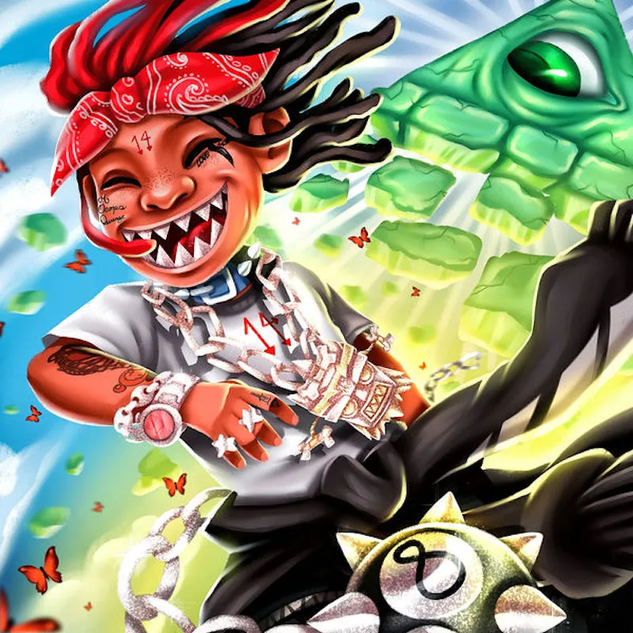

Trippie Redd is included for a bit of a different reason. Instead of being in an emotional state while listening to music, Trippie puts me into an emotional state.
Sometimes when I am listening to music my emotions become boring. Like I'm not feeling the music.
When this happens I naturally want to find a feeling. Usually, and I don't know why, but I enjoy feeling sad from a song. Almost like a self sabotage, yet it doesn't feel damning. So I thought I'd include him here.